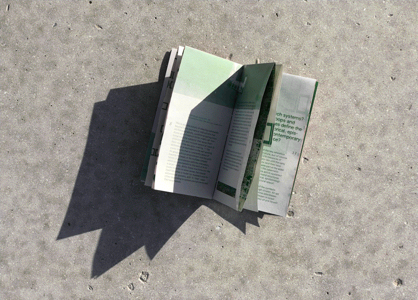
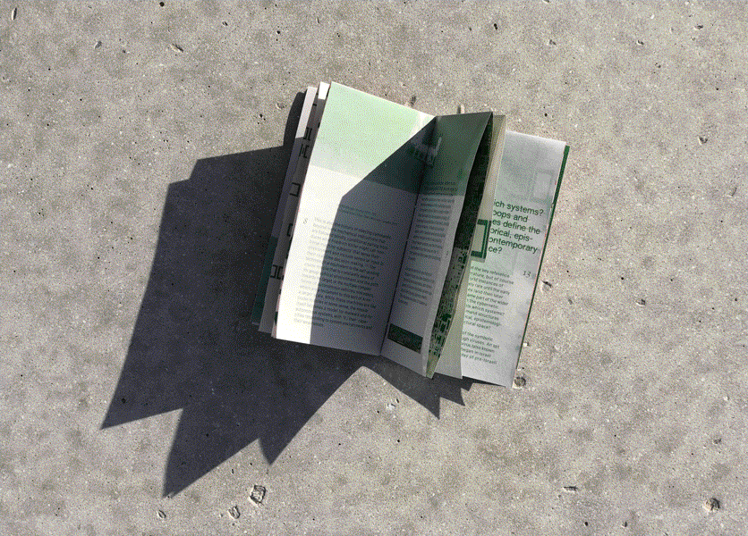
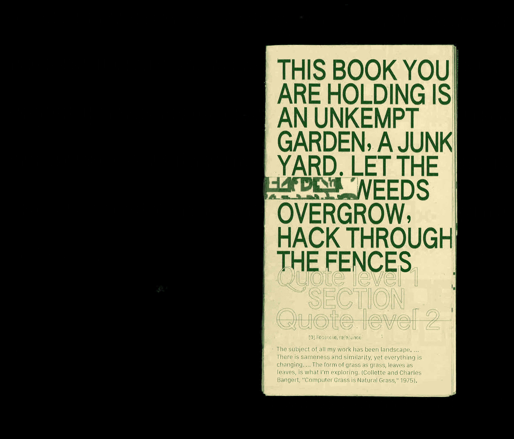
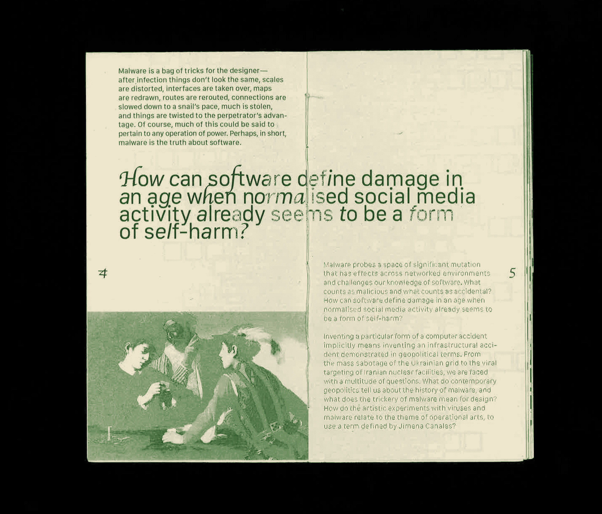
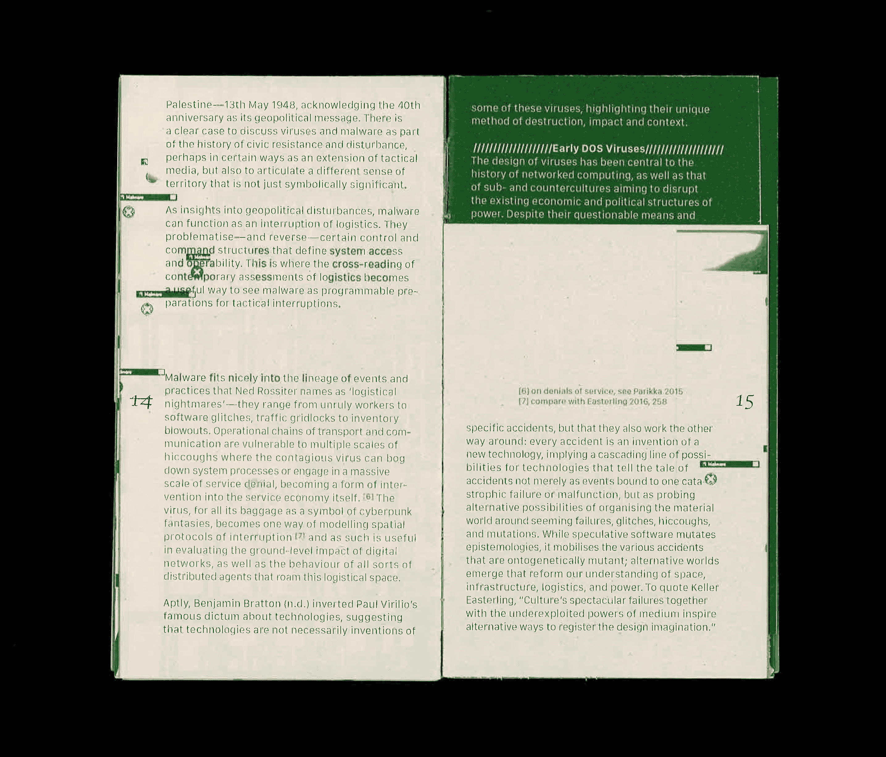
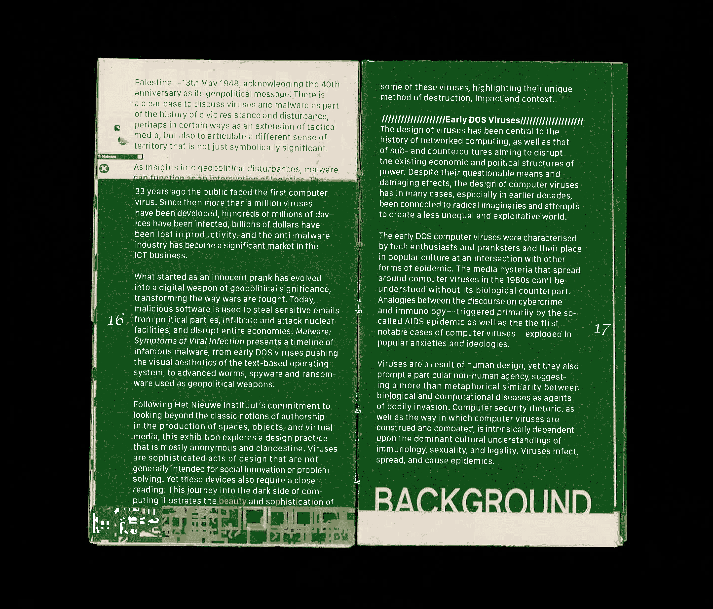
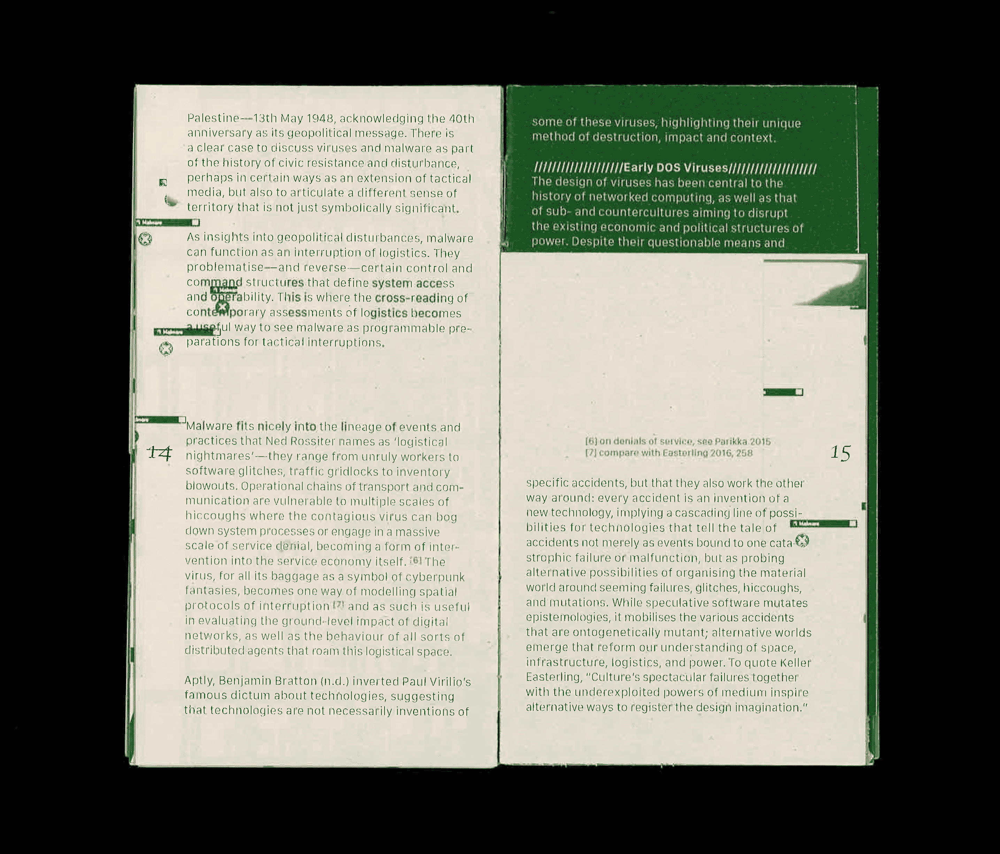
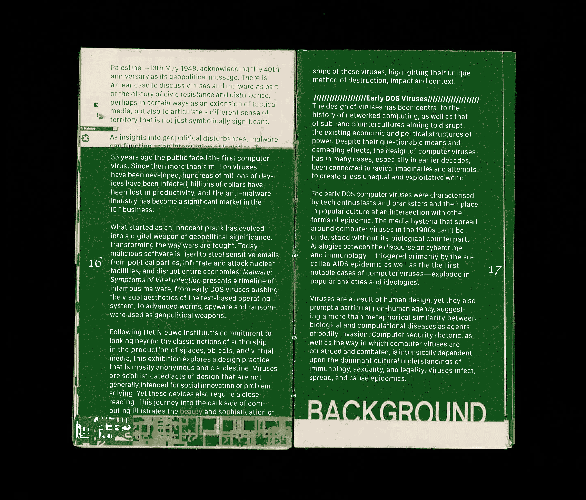
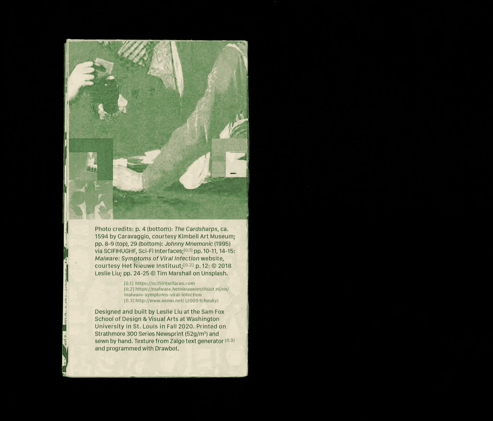
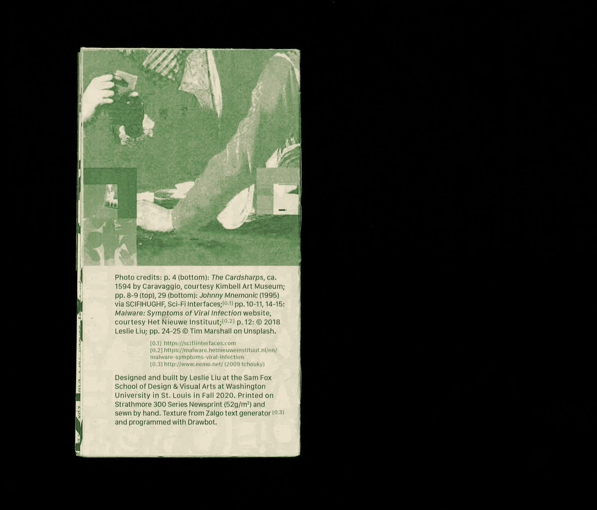

Winter 2020
3.5 × 6.5"
Jussi Parikka’s essay, “Malware as Operational Art: On the If/Then of Geopolitics and Tricksters,” encourages a reconsideration of glitches and instances of computer failure as the norm.
![A book cover against a patch of dead grass. The cover reads, 'This book you are holding is an unkempt garden, a junkyard. Let the weeds overgrow, hack through [the fences].' Its text is green, printed on newsprint. A sliver of the cover is cut out, revealing a green pattern in the interior.](rep.jpg) 


Continuing my research into interface metaphors, the structure of this book references the skeletal syntax of the web and the layered, nested anatomy of HTML. Smaller moves — the unravelling typography and cut paper revealing a computer-generated texture on the inner folds — seek to reinforce this theme of perceived danger, offering an uneasy, anti-reader friendly experience.
  





 

The use of San Francisco references the visual language of Apple products, whereas Apple Chancery embodies the sprawl of weeds and hints at contagion. A condensed Authentic Sans invites the reader to reconsider what a book can be — as seen in the front cover, which seeks to act as a billboard.